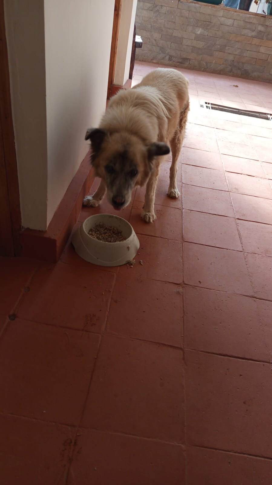

Mucheru World of Golf
Field operations on Monday, 28th September 2026 progressed smoothly under the supervision of Mr. Gichuhi and Ken, spanning volcanic pumice sub-base installation, apron elevation raising, agronomic turf care, boundary landscaping, utility piping, and dam maintenance:
- Green 7 Volcanic Pumice Application & Leveling: The site crew applied and precision-leveled volcanic pumice aggregate across the Green 7 foundation bed, completing the vital sub-base compaction layer directly over the hardcore rock and red soil foundation installed on previous days.
- Green 15 Apron Elevation Raising: Surplus red loam soil was hauled and spread around the perimeter of Green 15, raising the apron elevation to align smoothly with the green platform and establish proper drainage runoff slopes.
- Green 6 Apron Elevation Raising: Red loam soil fill was applied across the apron surrounds of Green 6, elevating and contouring the perimeter grade surrounding the green platform.
- Green 5 Turf Weeding: A dedicated 1-woman crew carried out meticulous hand weeding across Green 5's mature championship putting turfgrass, eradicating invasive weeds to preserve turf quality.
- Hedge Seedling Transport & Planting: The farm tractor transported nursery hedge seedlings to designated boundary planting sectors, where Githinji's women crew planted them along the perimeter fence line.
- Drainage Pipeline Extension to Gate B: Workers laid and coupled drainage pipes along the boundary trench, extending the utility pipeline from Maina's place all the way to Gate B at the golf site.
- Farm Tractor Refueling: The farm tractor received a full tank refuel from the on-site diesel drum, with Kamandau holding the hose and Kinoti operating the pump, ensuring uninterrupted logistical support.
- Dam 1 Embankment Leveling: Githinji's male crew leveled and shaped the Dam 1 embankment berms, smoothing and consolidating the earth slopes around the reservoir basin.
- Rainwater Inflow into Reservoir Dams: A light drizzle fell across the site, resulting in visible standing water collection across the lined reservoir basins of Dam 1 and Dam 3, confirming watertight retention.
Mucheru Engineering Summary
Green 7 achieved its completed pumice sub-base layer, Greens 15 and 6 had their aprons raised to grade, Green 5 turfgrass was thoroughly weeded, boundary hedges were planted, drainage piping reached Gate B, Dam 1 slopes were leveled, and rainfall accumulation confirmed dam liner integrity.
Comprehensive video walkthrough documenting Monday's field operations at Mucheru World of Golf, including Green 7 pumice leveling, Green 15 & 6 apron elevation raising, dam embankment slope work, drainage piping to Gate B, hedge planting, and tractor logistics.
Comprehensive 18-hole putting green status ledger tracking foundation bases, pumice compaction, riversand spreading, contouring, and drainage connections. Highlighting updates on September 28, 2026:
| Green | Current Technical & Agronomic State | Milestone Status |
|---|---|---|
| Green 1 | Clean riversand hauled and 100% fully applied across entire foundation bed over compacted volcanic pumice sub-base ready for final leveling (Sep 25); hardcore rocks hauled from Green 1 to Green 7 (Sep 27); received 1 lorry red soil (Sep 26); drainage outlet marked (Sep 26). | Riversand Fully Applied |
| Green 2 | Clean riversand applied and spread across the entire green bed over compacted volcanic pumice sub-base (Sep 23); received 1 lorry red soil delivery (Sep 26); drainage outlet alignment marked with chalk (Sep 26). | Riversand Applied |
| Green 3 | Clean riversand hauled and actively applied across green foundation surface ready for leveling (Sep 22); received 1 lorry red soil delivery (Sep 26); drainage outlet alignment marked with chalk (Sep 26). | Riversand Applied |
| Green 4 | Surrounding soil around Green 4 leveled to ground level using Backhoe Loader (Sep 24); clean riversand spread (Sep 22); received 1 lorry red soil delivery (Sep 26); drainage outlet alignment marked with chalk (Sep 26). | Surrounds Leveled |
| Green 5 Today | 1-woman crew completed manual weeding across the established championship turfgrass surface to maintain putting quality (Sep 28); subgrade drainage trenching line fully connected into Dam 2 outfall (Sep 21); ready; fully established mature championship putting green turfgrass under active sprinkler irrigation; received 1 lorry red soil delivery (Sep 26). | Turf Ready • Weeded |
| Green 6 Today | Surplus red soil applied to raise the apron level surrounding Green 6, grading the perimeter to match green bed elevation (Sep 28); received 1 lorry red soil delivery on green surrounds (Sep 26); drainage outlet alignment marked with chalk (Sep 26); palm planting advanced to Green 6 (Sep 23). | Apron Raised • Palms Placed |
| Green 7 Today | Volcanic pumice aggregate applied and leveled across the green foundation bed, completing the sub-base compaction layer (Sep 28); hardcore rocks hauled from Green 1 with pickup, placed, and broken over ballast-covered slit PVC drainage pipes; red soil fully applied and leveled across the entire green bed (Sep 27); polythene membrane and herringbone drainage installed (Sep 26). | Pumice Applied & Leveled |
| Green 8 | Riversand applied earlier remains unleveled (Sep 20); received 1 lorry red soil delivery (Sep 26); drainage outlet alignment marked with chalk (Sep 26); subgrade drainage trenches excavated. | Riversand Unleveled |
| Green 9 | Clean riversand application completed across the entire green surface ready for final leveling (Sep 23); received 1 lorry red soil delivery (Sep 26); drainage outlet alignment marked with chalk (Sep 26). | Riversand Applied |
| Green 10 | Stockpiled soil hill near Green 10 cut into and reshaped using Backhoe Loader (Sep 24); volcanic pumice sub-base compacted with roller (Sep 20); received 1 lorry red soil delivery (Sep 26); drainage outlet alignment marked with chalk (Sep 26). | Soil Reshaped • Compacted |
| Green 11 | Volcanic pumice sub-base compacted with vibratory roller compactor (Sep 20); received 1 lorry red soil delivery (Sep 26); drainage outlet alignment marked with chalk (Sep 26); membrane placed; drainage cut. | Pumice Compacted |
| Green 12 | Volcanic pumice sub-base compacted with vibratory roller compactor (Sep 20); received 1 lorry red soil delivery (Sep 26); drainage outlet alignment marked with chalk (Sep 26); membrane placed; drainage cut. | Pumice Compacted |
| Green 13 | Red soil apron surrounds precision leveled and graded by site crew following additional red loam filling (Sep 25); received 1 lorry red soil delivery (Sep 26); drainage outlet alignment marked with chalk (Sep 26); pumice compacted (Sep 20). | Apron Leveled • Pumice Compacted |
| Green 14 | Earthen barrier berm raised and reshaped along green boundary using Backhoe Loader (Sep 23); received 1 lorry red soil delivery (Sep 26); drainage outlet alignment marked with chalk (Sep 26); pumice compacted (Sep 20). | Barrier Berm Raised |
| Green 15 Today | Surplus red soil applied to raise the apron level surrounding Green 15, building up the perimeter grade to match green bed elevation (Sep 28); boundary with Green 10 reshaped; volcanic pumice compacted with vibratory roller (Sep 20); outfall drainage connected to Dam 1 (Sep 17); received 1 lorry red soil delivery (Sep 26). | Apron Raised • Compacted |
| Green 16 | Protective earthen barrier berm between Tee 16 and Green 16 reworked, graded, and reinforced using Backhoe Loader (Sep 25); received 1 lorry red soil delivery (Sep 26); drainage outlet alignment marked with chalk (Sep 26); pumice compacted (Sep 20). | Tee-Green Barrier Reworked |
| Green 17 | Red soil apron surrounds precision leveled and graded by site crew following additional red loam filling (Sep 25); protective barrier berm reshaped (Sep 25); received 1 lorry red soil delivery (Sep 26); drainage outlet alignment marked with chalk (Sep 26). | Apron Leveled • Berm Reshaped |
| Green 18 | Site crew actively reshaping and resizing Green 18 foundation bed and perimeter with red soil and stone edging (Sep 27); adjacent protective barrier moved and mound contoured (Sep 25); received 1 lorry red soil (Sep 26); pumice compacted (Sep 20). | Reshaping & Resizing |
Comprehensive 18-hole championship teebox platform audit tracking earthwork leveling, structural embankments, and playing corridor alignments. Preserved day-to-day continuity as of September 28, 2026:
| Teebox | Current Technical & Earthwork State | Platform Status |
|---|---|---|
| Tee 1 | Championship launch platform completely reshaped, cut, and graded to design elevation using Backhoe Loader (Sep 24); received 1 lorry red soil delivery (Sep 26). | Platform Reshaped |
| Tee 2 | Playing launch platform completely reshaped, contoured, and graded using Backhoe Loader (Sep 24); received 1 lorry red soil delivery (Sep 26). | Platform Reshaped |
| Tee 3 | Playing launch platform completely reshaped, contoured, and graded using Backhoe Loader (Sep 24); received 1 lorry red soil delivery (Sep 26). | Platform Reshaped |
| Tee 4 | Championship launch platform completely reshaped, cut, and graded using Backhoe Loader (Sep 23); received 1 lorry red soil delivery (Sep 26). | Platform Reshaped |
| Tee 5 | Launch platform completely reshaped, cut, and graded using Backhoe Loader (Sep 22); received 1 lorry red soil delivery (Sep 26); palm trees planted along boundary corridor. | Platform Reshaped |
| Tee 6 | Precision leveling and compaction completed; fresh delivery of 1 lorry red loam topsoil unloaded at platform surrounds (Sep 26). | Red Soil In • Leveled |
| Tee 7 | Dual launch platforms completely reshaped and precision contour-leveled using XGMA backhoe loader (Sep 20); received 1 lorry red soil delivery (Sep 26). | Dual Platforms Reshaped |
| Tee 8 | Graded, leveled, and contour-adjusted; fresh delivery of 1 lorry red loam topsoil unloaded directly on platform (Sep 26). | Red Soil In • Graded |
| Tee 9 | Playing platform leveled and surrounding perimeter ground graded (Sep 1); received 1 lorry red soil delivery (Sep 26). | Platform Leveled |
| Tee 10 | Graded and compacted platform serving the start of the back-nine playing corridor; received 1 lorry red soil delivery (Sep 26). | Platform Compacted |
| Tee 11 | Rough shaping, elevation grading, and Backhoe subsoil leveling completed (Sep 7); received 1 lorry red soil delivery (Sep 26). | Shaped & Graded |
| Tee 12 | Dual platforms established: primary championship tee resized; new forward Ladies' Tee platform constructed (Sep 5); received 1 lorry red soil delivery (Sep 26). | Dual Platforms Complete |
| Tee 13 | Playing platform completely reshaped, contour-cut, and precision leveled to design elevations using Backhoe Loader (Sep 25); received 1 lorry red soil delivery (Sep 26). | Platform Reshaped |
| Tee 14 | Playing platform reshaped, elevation precision-leveled, and protective boundary embankment reinforced (Sep 16); received 1 lorry red soil delivery (Sep 26). | Reshaped & Leveled |
| Tee 15 | Playing platform completely shaped and contour-leveled with backhoe loader (Sep 19); received 1 lorry red soil delivery (Sep 26); main HDPE waterline laid in boundary trench (Sep 15). | Shaped & Leveled |
| Tee 16 | Protective earthen boundary barrier between Tee 16 and Green 16 reshaped, graded, and reinforced using Backhoe Loader (Sep 25); received 1 lorry red soil delivery (Sep 26); platform leveled (Sep 20). | Barrier Berm Reworked |
| Tee 17 | Championship launch platform completely reshaped, contour-cut, and precision-graded to design elevation using Backhoe Loader (Sep 25); received 1 lorry red soil delivery (Sep 26). | Platform Reshaped |
| Tee 18 | Championship tee platform leveled; perimeter approach cleared and graded (Sep 1); received 1 lorry red soil delivery (Sep 26). | Platform Leveled |
Operations Synthesis • Course Progress Rates
Greens Status (18 Holes): 1 green (Green 5) has established championship turfgrass under active sprinkler irrigation with drainage connected to Dam 2; manual weeding was completed today by a dedicated 1-woman crew to maintain putting surface quality. Green 7 achieved a critical agronomic milestone today with volcanic pumice aggregate applied and leveled across the bed, completing its sub-base foundation layer. Greens 15 and 6 had their apron levels raised with surplus red soil to match green platform elevations. 5 greens (Greens 1, 2, 3, 4, 8, 9) have clean riversand applied. 11 greens (Greens 7, 10 – 18, and Green 1) have completed compacted volcanic pumice sub-bases.
Teebox Status (18 Holes): All 18 playing platforms maintain their shaped elevations with red soil staged across platforms. 12 playing platforms (Tees 1, 2, 3, 4, 5, 7, 12, 13, 14, 15, 16, 17) are fully reshaped and precision graded, while Tees 6, 8, 9, 10, 11, and 18 remain stable in compacted earthworks. Continuity preserved from preceding daily reports.
Water Storage & Infrastructure: Dam 1 embankment slopes were graded and leveled by Githinji's male crew. Dam 1 and Dam 3 water retention was visually confirmed following the day's light drizzle. Perimeter drainage piping was extended from Maina's place to Gate B along the boundary fence line.
Sequential field photography documenting Green 7 pumice application and leveling, Green 15 & 6 apron elevation raising, Green 18 contours, Green 5 turf weeding, hedge seedling transport and planting, utility drainage piping, tractor refueling, Dam 1 embankment grading, and dam water retention:

Green 7 Sub-Base — Pumice Application In Progress
Workers spreading and leveling volcanic pumice aggregate across the Green 7 foundation bed over the previously placed hardcore and red soil layers.

Green 7 Crew — Pumice Leveling Operation
The site crew actively spreading pumice aggregate with rakes and shovels, ensuring even distribution across the green surface.

Green 7 Completion — Pumice Fully Leveled
Overview of Green 7 showing the volcanic pumice sub-base fully applied and leveled across the entire green bed surface.

Green 7 Aerial — Pumice Sub-Base Complete
Elevated aerial view of Green 7 showing the uniform pumice layer covering the entire green foundation bed with surrounding red soil apron.

Green 15 — Surplus Red Soil Apron Raising
Workers distributing surplus red soil around the Green 15 apron perimeter, raising the grade level to match the green bed elevation.

Green 15 — Red Soil Distribution Close-Up
Close-up view showing red loam soil being spread and leveled across the Green 15 apron surrounds for proper grading.

Green 15 Aerial — Apron Level Raised
Elevated aerial view showing the completed apron raising operation around Green 15 with uniform red soil coverage across the perimeter.

Green 6 — Surplus Red Soil Apron Raising
Workers spreading surplus red soil around the Green 6 apron, raising and grading the surrounding perimeter level.

Green 6 Aerial — Apron Raising Complete
Aerial perspective of Green 6 with red soil freshly applied and leveled across the apron surrounds, showing the green bed and raised perimeter.

Green 18 Aerial — Reshaping & Resizing Progress
Elevated aerial view of Green 18 showing the ongoing reshaping and resizing work on the foundation bed and perimeter contours.

Green 5 Turf Maintenance — Weeding In Progress
A dedicated 1-woman crew manually weeding the established championship turfgrass on Green 5 to maintain putting surface quality.

Green 5 — Close-Up Weeding Detail
Close-up view of the crew member carefully removing weeds from between the turfgrass on Green 5's established putting surface.

Hedge Logistics — Tractor Transporting Seedlings
The farm tractor loaded with hedge seedlings being transported from the nursery to designated planting locations across the golf course boundary.

Boundary Planting — Githinji's Women Crew
Githinji's women crew planting hedge seedlings along the designated boundary fence line at the golf course perimeter.

Utility Infrastructure — Drainage Pipes to Gate B
Workers installing drainage pipes along the perimeter trench, extending the pipeline from Maina's place towards Gate B at the golf site.

Boundary Pipeline — Pipes in Trench
Long view of the drainage and water pipeline installed along the boundary fence trench with pipes and blue fittings visible in the excavated channel.

Equipment Logistics — Tractor Fuel Refill
The farm tractor being refueled from the on-site diesel barrel to ensure continued operational readiness for haulage and planting operations.
.jpeg)
Tractor Refueling — Kamandau & Kinoti
Kamandau holding the fuel pipe on the barrel while Kinoti fills the farm tractor's tank, ensuring a full refuel for continued site operations.

Dam 1 Embankment — Crew Leveling Slopes
Githinji's male crew working on the Dam 1 embankment, grading and compacting the earth slopes to maintain structural integrity.

Dam 1 Aerial — Liner & Embankment Progress
Elevated aerial view of Dam 1 showing the heavy-duty polythene liner covering the basin floor with leveled embankment slopes visible.

Dam 1 Morning — Rainwater Accumulation
Morning view of Dam 1 with visible water accumulation from the day's drizzle, confirming the liner's water retention capability.

Dam Water Levels — Post-Drizzle Reserves
View of the dam basins showing collected rainwater following the light drizzle, indicating effective water retention by the installed liners.

Dam Basins — Rainwater Collection Evidence
Alternate angle showing standing water in the dam basins after the day's light rainfall, replenishing the site's water reserves.

Dam 3 Aerial — Liner Fully Placed
Aerial view of Dam 3 showing the heavy-duty polythene liner sheets fully placed and connected across the entire channel basin.

Dam 3 — Liner Installation Detail
Detailed aerial perspective of the Dam 3 liner showing the interconnected polythene membrane sheets covering the channel floor and sidewalls.
Chaka Farms
Field operations at Chaka Farms on Monday, 28th September 2026 combined dairy milking yield reconciliation, veterinary health screening, security gate reconstruction, agricultural maize planting preparation, and daily canine and compound maintenance:
- Dairy Milking Yield (Kamandau): Kamandau oversaw morning and evening dairy milking sessions, recording 2.0 Litres in the morning and 2.0 Litres in the evening, achieving a total gross dairy cow milk yield of 4.0 Litres.
- Milk Disbursements & Farm Reserve Reconciliation: Total scheduled disbursements deducted from gross production amounted to 2.0 Litres, comprising 1.0 Litre for goat kids (0.5L morning and 0.5L evening rations), 0.5 Litre allocated to Gladys, and 0.5 Litre allocated to Maasai. This leaves a reconciled net farm reserve balance of 2.0 Litres.
- Veterinary Services & Diagnostic Blood Sampling: The visiting veterinarian conducted a detailed health check on the farm goats, drawing blood samples from the goats for laboratory diagnostic screening and health evaluation.
- Gate A Reconstruction Teardown: Gate A was taken down to be redone. Workers dismantled the old gate panel, laid it flat on the ground alongside the old wooden post, and dug foundation holes next to the fence posts for the new structural pillars.
- Agricultural Maize Cultivation & Organic Manure Application: Farm agricultural workers initiated field preparations across the cultivated plots for seasonal maize planting, methodically digging regular grids of planting holes across the tilled soil and incorporating organic manure into each hole to enhance soil fertility prior to seed sowing.
- Canine Unit Care & Routine (Mwangi): Mwangi managed daily canine unit routines, cooking nutritious meals for the working dogs, thoroughly cleaning and sanitizing kennel stalls, and leading dogs on guided leash walks.
- Compound & Garden Cleanliness (Margaret & Monica): Margaret and Monica carried out sweeping and estate upkeep across the compound and farm gardens, ensuring immaculate cleanliness.
Chaka Farms Operations Summary
Dairy production achieved 4.0L gross yield with 2.0L in scheduled rations and allocations, leaving 2.0L in net reserve. The vet completed goat health examinations and blood sampling, Gate A reconstruction commenced with foundation excavations, maize planting plots were systematically dug and manured across the agricultural field, and canine care and compound cleanliness were maintained to high standards.
Quantitative breakdown of gross dairy production, scheduled disbursements, and net farm inventory for Monday, 28th September 2026:
| Production / Allocation Category | Morning Session | Evening Session | Daily Total | Accounting Impact |
|---|---|---|---|---|
| Gross Dairy Cow Milk Production | 2.0 L | 2.0 L | 4.0 L | Gross Inflow (Total Harvested) |
| Goat Kids Milk Ration | 0.5 L | 0.5 L | - 1.0 L | Disbursement (Nutrition Ration) |
| Gladys Allocation | — | — | - 0.5 L | Disbursement (Staff Allocation) |
| Maasai Allocation | — | — | - 0.5 L | Disbursement (Staff Allocation) |
| Total Allocations & Disbursements Deducted | - 2.0 L | Total Outflow | ||
| Net Remaining Farm Reserve Balance | 2.0 L | Net Farm Inventory | ||
📌 Dairy Ledger Reconciliation Note
All milk yields are recorded strictly in Litres (L). Allocations and rations (2.0L total) are deducted directly from the gross harvest (4.0L), leaving an exact net farm reserve balance of 2.0 Litres.
Summary of clinical livestock care and structural perimeter infrastructure executed on Monday, 28th September 2026:
- Veterinary Blood Sampling: The visiting veterinarian attended to the goat herd, restraining each animal safely to collect jugular blood samples for full diagnostic laboratory profiling, ensuring preventive veterinary oversight.
- Gate A Dismantling: Gate A was unhinged and lowered flat onto the ground. The old timber upright post was removed, and deep concrete footing holes were excavated along the fence line to prepare for heavy-duty structural steel gate posts.
Infrastructure & Health Note
Diagnostic blood sampling will establish comprehensive baseline health parameters for the goat flock. Gate A foundation holes are ready for concrete footing and new structural post alignment.
Daily routine activities covering farm working dogs and compound presentation on Monday, 28th September 2026:
- Kennel Sanitation & Hygiene: All canine kennel stalls were scrubbed, disinfected, and laid with fresh dry bedding to ensure optimal sanitation and prevent disease vectors.
- Nutritional Meal Preparation: Mwangi prepared and cooked hot, balanced meals tailored to the working dogs' dietary requirements and administered fresh water.
- Guided Leash Walking & Conditioning: Each dog was taken on guided on-leash walking sessions around the farm paddocks, reinforcing leash manners, exercise conditioning, and calm behavior.
- Compound & Garden Sweeping: Margaret and Monica conducted thorough sweeping and debris clearance across estate lawns, gravel driveways, and garden beds, keeping grounds in immaculate condition.
Sequential field photography documenting veterinary blood sampling, Gate A structural dismantling and foundation hole excavation, and agricultural maize planting hole digging and organic manuring:

Veterinary Visit — Goat Blood Sampling
The veterinarian and farm assistant safely restraining a goat while drawing a blood sample from the neck for diagnostic laboratory analysis.

Gate A — Metal Panel Removed
Workers at the Gate A entrance with the metal gate panel laid flat on the ground alongside the old wooden post, ready for reconstruction.

Gate A — Foundation Hole for New Post
Close-up view of the excavated foundation hole next to the fence post, prepared for the new structural support for the reconstructed gate.

Gate A — Fence Post & Foundation Detail
Detail of the fence post area with the excavated concrete-filled foundation hole visible alongside the wire mesh boundary fence.

Maize Cultivation — Hole Digging & Manure
Aerial view of the prepared agricultural plot at Chaka Farms showing rows of planting holes dug across the tilled red soil field and organic manure applied for maize cultivation.

Maize Field — Worker Preparing Planting Rows
Wide-angle aerial view of the Chaka Farms maize cultivation field with a farm worker walking through the rows of prepared holes across the extensive planting area.
Kabete Residence
Operational updates from Kabete Residence on Monday, 28th September 2026 were overseen and shared by Njoki, covering subgrade foundation masonry, concrete vibration, column steel reinforcement, lawn grass replanting, garden weeding, and domestic pet care:
- Foundation Stone Laying (In Progress): Construction workers wearing high-visibility vests continued laying cut foundation stones within the deep structural excavation pit adjacent to the main residence. Large dressed building stones were positioned and mortared along the footing perimeter.
- Concrete Base Slab Vibration (In Progress): The civil crew operated mechanical poker vibrators to consolidate the freshly poured concrete slab footings, eliminating voids and ensuring high-density load-bearing capacity.
- Column Reinforcement Steel Bar Setup (Complete): Prefabricated steel rebar cages for the load-bearing vertical columns were fully installed, plumbed, and anchored onto the foundation footings, ready for formwork and concrete casting.
- Grass Replanting Near Main House Storage Area: Gardeners replanted grass runners near the main house storage cabinet, restoring bare ground patches along the stone walls and paved walkways.
- Grass Replanting Near Water Tanks Area: Fresh turf grass runners were established around the elevated black water storage tanks and pump manifold, rehabilitating the ground beneath the utility tanks.
- Garden Weeding & Turf Grooming: Manual weed removal was carried out across the main residence lawns and shrubbery borders, keeping turf surfaces clean and weed-free.
- Ornamental Flower & Wall Garden Watering: A Greenersol gardener watered ornamental flowers, border shrubs, and hanging wall garden plantations along the natural stone retaining walls using a hosepipe.
Kabete Residence Accomplishment Summary
Foundation masonry stone laying advanced steadily, base concrete slabs were mechanically vibrated, column reinforcement cages were 100% completed, lawn grass replanting restored grounds near storage and water tanks, and gardens and wall planters were meticulously watered.
Attentive care and routine welfare were provided to the resident household pets residing at Kabete Residence on Monday, 28th September 2026:
- Ajabu the Golden Retriever: Ajabu enjoyed his outdoor exercise walk around the estate gardens and paved driveways, exhibiting energetic spirits. Later, he was fed his meal from his dedicated bowl on the red-tiled veranda.
- Resident Cats (Reo, Mocha & Aiko): All three household cats were cared for indoors, resting peacefully side-by-side in high comfort.
🐾 Domestic Pet Welfare Note
Ajabu the Golden Retriever and cats Reo, Mocha, and Aiko are permanent household residents of Kabete Residence. All pets showed excellent vitality, healthy appetite, and content behavior throughout the day.
Sequential field photography documenting foundation stone masonry, concrete vibration, column steel cages, lawn replanting, garden weeding, flower watering, and domestic pet welfare for Ajabu and resident cats:

Foundation Works — Stone Laying In Progress
Construction workers in high-visibility vests placing large cut foundation stones in the deep excavation pit, with an access ladder positioned into the trench.

Foundation Crew — Mortaring Stones into Position
Workers lifting and positioning heavy cut stones along the foundation wall, with rebar columns visible rising from the concrete base.

Foundation Base — Rebar & Concrete Footing
View of the excavation floor showing the poured concrete base with protruding steel rebar column cages and partially laid foundation stones against the red laterite soil wall.

Column Reinforcement — Bars Fully Set Up
Three construction workers inside the excavation pit amid completed column reinforcement bar cages and stone wall foundations, with rebar cage columns secured in position.

Column Setup — Wide Excavation View
Workers carrying out stone placement and column reinforcement work inside the excavation, with multiple rebar cages and foundation walls visible in the deep pit.

Concrete Work — Vibrating the Base Slab
Workers operating a concrete vibrator machine inside the excavation pit, compacting the freshly poured slab with rebar columns and hose line visible.

Basement Level — Concrete Vibration & Column Consolidation
Multiple workers consolidating the concrete around the column bases using vibration equipment, with the deep red laterite soil walls of the excavation surrounding the work area.

Grass Replanting — Main House Storage Area
Freshly planted grass runners filling in bare patches along the stone building wall, next to the wooden storage cabinet and potted plant.

Landscaping — Grass Replanting Along Walkway
A gardener replanting grass runners near the main house, with the stone wall, potted Agapanthus flowers, and paved walkway visible in the background.

Water Tanks Area — Grass Replanting In Progress
A worker planting fresh grass runners into the soil near the main house's elevated black water storage tank, with plumbing fixtures and ivy-covered retaining wall visible.

Water Tanks Area — Wider Replanting View
Wider view of the grass replanting area near the water tanks, showing existing green lawn transitioning into freshly planted patches around the storage infrastructure.

Garden Maintenance — Weed Removal
A gardener bending down to manually remove weeds from the ornamental garden beds along the lush green lawn and flowering border plantings.

Flower Care — Watering Wall Garden & Ornamentals
A Greenersol gardener using a hand-held hose to water the ornamental wall garden plantations and hanging plants along the stone retaining wall.

🐕 Ajabu — Afternoon Walk at Kabete Residence
Ajabu the Golden Retriever enjoying his outdoor walk around the Kabete Residence grounds, exploring the garden paths and lawn areas.

🐕 Ajabu — Exploring the Residence Grounds
Ajabu walking through the Kabete Residence outdoor areas, his golden coat visible as he moves along the estate paths.

🐕 Ajabu — Mealtime at Kabete Residence
Ajabu enjoying his meal from his feeding bowl on the residence veranda, his golden fur and content expression clearly visible.

🐱 Resident Cats — Aiko, Reo & Mocha
The three Kabete Residence cats — Aiko, Reo, and Mocha — resting peacefully together indoors, comfortable and well-cared-for.
Amani Cottage
Grounds maintenance operations at Amani Cottage on Monday, 28th September 2026 were supervised by Edwin, focusing on compound hygiene and landscape irrigation:
- Compound Sweeping & Debris Clearance: Edwin oversaw the thorough sweeping of the cottage driveway, stone pathways, veranda perimeters, and parking bays, clearing fallen leaves and organic litter.
- Ornamental Plant & Flower Bed Watering: Hand-held hosepipe irrigation was applied to the ornamental flower beds, perimeter hedges, and border shrubbery around Amani Cottage, ensuring sustained moisture and vibrant foliage.
Amani Cottage Accomplishment Summary
All compound pathways and verandas were swept clean, and ornamental gardens and shrub borders were thoroughly irrigated, maintaining pristine estate presentation.